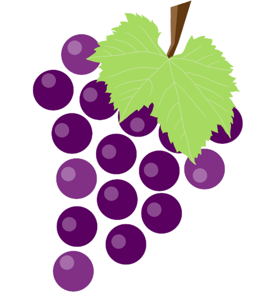

Web livro de receitas
Batida alcoolica de uva

Ingredientes:
1 pacote de polpa de uva
Vinho branco (a medida da lata de leite condensado ou a gosto)
1 lata de leite condensado
10 cubinhos de gelo (a gosto também)
Decoração (opcional)
folhas de hortelã
3 uvas
Modo de preparo:
- Retire a polpa da melancia e coloque em uma poncheira
- Amasse a polpa
- Misture a vodka e o leite condensado
-
- Misture tudo com um fue (ou qualquer utencilio que facilite a mistura).

Sirva-se
Serve até 3 pessoas
Proxima pagina